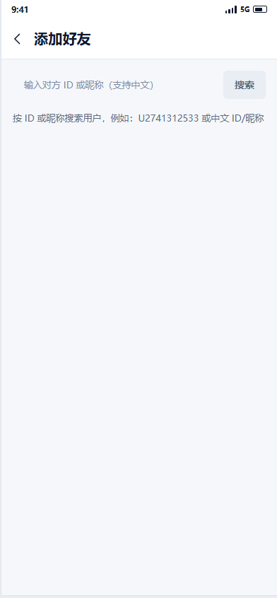
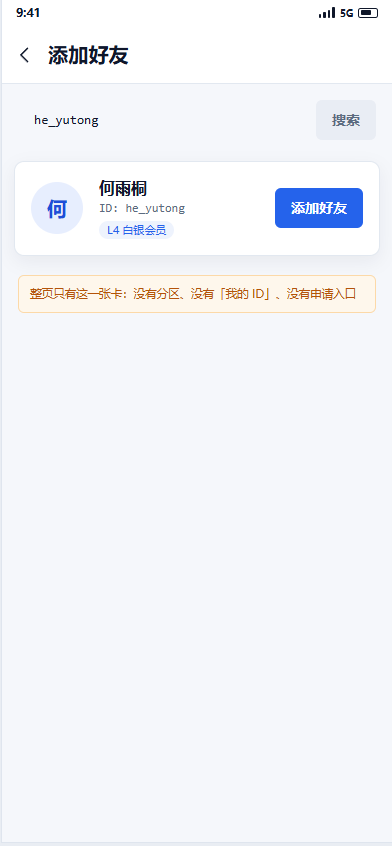
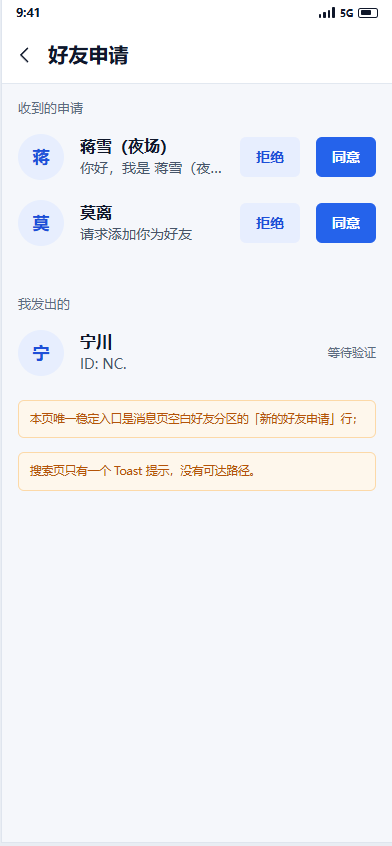
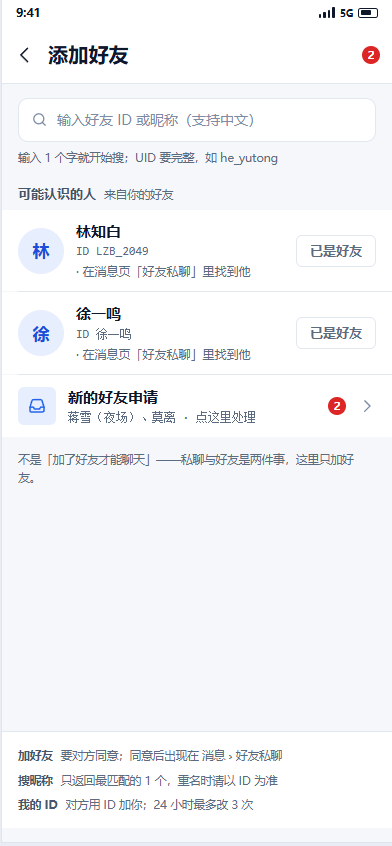
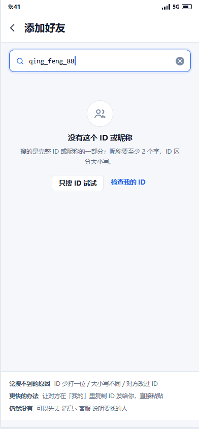
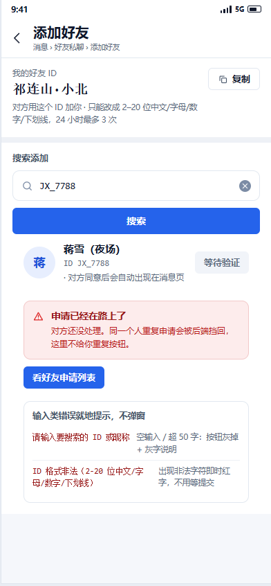
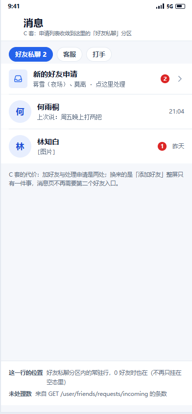

目标：把「太丑了」拆成可验收的问题——先出图、再审批、后实施。本页只做设计，没有改动 apps/** 任何一行业务代码；
每屏都标了它对应的真实接口与后端错误码原文，后端不存在的能力一律不画。
取证方式（如实说明）：本机没有连接真机（adb devices 为空），所以下面的现状图是
按源码逐行复刻的（尺寸/色值/文案取自源码，未美化、未夸张）。缺陷结论不依赖截图——每条都能指到源码行。



| # | 缺陷 | 证据（源码行） | 影响 | 哪套解决 |
|---|---|---|---|---|
| D1 | 搜索是「空输入 + 按钮」，不是即时搜索 | 必须点按钮或回车才发请求（friend_search_page.dart:86-90）；输入过程中页面没有任何反馈，既慢又老派。 |
高 | A / C |
| D2 | 结果卡是「玻璃卡」：带阴影 + 圆角 12 + 胶囊 10，列表页用卡片阵 | GlassSurface 默认带阴影（fish_glass.dart:425-427），而 docs/21 要求「列表与卡片用发丝线，阴影只给弹层」；radius: AppSpacing.md=12、等级胶囊 circular(10) 都不在 6/10/14 分档里。 |
高 | A / B / C |
| D3 | 同一条搜索结果出现三种按钮语义，主次不分 | 「已是好友」=可点的 tonal 按钮（实为跳资料页）、「等待验证」=禁用 tonal、「添加好友」=filled（:118-129）；用户无法从形状判断哪个是主操作。 |
高 | A / B / C |
| D4 | 没有「我的好友 ID」——被加的那一半流程缺失 | 全页只有输入框与结果，用户想让别人加自己时无处可复制 ID（对照 B 套第一段）。 | 中 | B（A/C 收在次级行） |
| D5 | 空态/错误态只有一行文字 | 搜不到 = 居中红字（:98）；未搜索 = 一行 13 号灰字说明（:100，40 字长句）；都没有下一步动作，也没有区分「没搜到 / 格式错 / 已是好友」。 |
高 | A / B / C |
| D6 | 好友申请列表与「加好友」是两个入口，而申请页实际上很难到达 | FriendRequestsPage 唯一稳定入口是消息页好友分区的 ListTile（messages_page.dart:536-555），而该分区只在 _buildFriendsTab() 里存在——它已经是未引用代码（:529-530 有 // ignore: unused_element）。搜索页遇到 pending_in 只弹一个 Toast「请在新的好友申请中同意」（friend_search_page.dart:53-57），点完无处可去。 |
高 | A（页头角标）/ B（第三段）/ C（消息页常驻行） |
| D7 | 复制/ID 交互不清：等级胶囊是唯一「标签」，占了主信息位 | 卡片里 nickname / ID / levelName 三段紧挨，等级胶囊用主色 8% 底（:149-157）——按 docs/21「标签只给必须区分的项」，等级不该抢这个位置；也没有任何复制 ID 的动作。 |
中 | A / B / C |
| D8 | 占位文案与真实能力不一致，且输入门槛没有提示 | 占位写「输入对方 ID 或昵称（支持中文）」，空态却举例 U2741312533（:100，界面里不存在的英文前缀）；后端 uidValid 要求 2–20 位、关键字 ≥1 且 ≤50 字（friend.service.ts:12,202），前端一个字就发请求，被后端 400 打回也只是弹 Toast。 |
中 | A / B / C |
| D9 | 同一入口出现两次：添加好友被挂在「服务页搜索」与「消息页搜索框」上 | 首页/服务页的搜索按钮进的是好友搜索（services_page.dart:446），消息页搜索框也进同一个页面（messages_page.dart:256）——违反 CLAUDE.md 结构规则 1「同一入口只出现一次」。 |
中 | A（消息页搜索改搜会话）/ B（入口收到消息页好友分区）/ C（同 B） |
| D10 | 加载态是整屏转圈，输入框与结果位置跳动 | 搜索中 _result = null + Center(CircularProgressIndicator)（:26-30, 95-96），内容区高度从 0 跳到卡片高度。 |
低 | A / B / C |
messages_page.dart:529-530 标着
// ignore: unused_element）；搜索页遇到「对方已申请你」只弹一个 Toast 让用户自己去「新的好友申请」，
但界面里没有通向它的路径。三套方案都给了它一条真实可达的路。
结构：进页面即聚焦输入框 → 输入 1 个字就出结果（防抖 250ms）→ 申请列表压成页头一个带角标的入口。
与消息页「好友」分区：消息页搜索框改回「搜已有会话」；加好友的唯一入口＝消息 › 好友私聊 › 右上角「+」（0 好友时即该分区空态按钮）。
代价：申请列表多一层 push，靠页头角标兜住可发现性。
结构：一页三段——我的好友 ID（可复制）/ 搜索添加 / 新的朋友（带未处理数），发丝线分隔。
与消息页「好友」分区：消息页只留会话流，不再有第二个好友入口；本页同时管「加人」与「处理申请」。
代价：信息量最大，首屏需要滚动；「我的 ID」占最贵的位置。
结构：整屏只有搜索 + 结果；申请列表收敛到消息页「好友私聊」分区里的一行（带未处理角标）。
与消息页「好友」分区：最贴结构规则 3——消息页三类分区不变，「新的好友申请」是分区内的常驻行，不是第二个 tab。
代价：加人与处理申请分成两处；消息页多一行常驻行，回归面最大。



| docs/21 条目 | 规范要求 | 现状 | 本设计 | 落地方式 |
|---|---|---|---|---|
| 渐变当主视觉 | 禁用 | 未出现渐变（按钮/标题/角标全部实色） | ✅ 三套一致 | 设计稿中 gradient( 出现 0 次（生成器自检） |
| 每卡左侧彩色竖条 | 禁用 | 未出现 | ✅ 三套一致 | 分组靠分区标题 + 发丝线 |
| 全部大圆角（≥16） | 禁用 | 现状卡 12 / 胶囊 10 不在分档 | ✅ 已改 | 只用 6（按钮/小控件）、10（卡片/输入框）、14（C 套结果大卡）、胶囊 |
| 阴影铺满卡片 | 禁用（列表用发丝线） | GlassSurface 结果卡带阴影 | ✅ 已改 | box-shadow 只出现在输入框聚焦环（3px 主色 10% 透明度） |
| 顶部并排三个大数字 | 禁用 | 未出现 | ✅ 三套一致 | B 套第一段只有一个 ID，不是三个数字 |
| 每条信息配彩色小标签 | 禁用 | 等级胶囊是标签位 | ✅ 已改 | 全页最多 1 个状态标签（「对方已申请你」），其余靠字号字重与灰度 |
| 居中对称、处处均匀间距 | 禁用（左对齐 + 组内紧组间松） | 空态与错误态居中且间距均匀 | ✅ 已改 | 左对齐为主；左右边距固定 16；组内 8–10、组间 20（.sec padding-top:20） |
| emoji 当图标 | 禁用 | 未出现 | ✅ 三套一致 | 11 个自绘线性 SVG（assets/icons/*.svg，1.8 描边、圆角端点）；Flutter 侧映射到 AppIcon（Material outlined） |
| 玻璃拟态/光斑/装饰插画 | 禁用 | 结果卡走 GlassSurface | ✅ 已改 | 零插画、零位图；页面上的图形只有线性图标与色块 |
| 纯黑配纯白 | 禁用 | 近黑 + 冷灰底，已合规 | ✅ 保持 | #0F172A + #F5F7FB |
| 假数据是整数/一眼假 | 禁用 | 现状无假数据（真数据驱动的页面） | ✅ 已改 | he_yutong / mo_li_2019 / LZB_2049 / JX_7788 / 「L4 · 累计消费 3 档」/「上次说：周五晚上打两把」 |
| 空态/加载/错误态必须设计，且空态给下一步动作 | 要 | 空态与错误态只有一行文字；加载是整屏转圈 | ✅ 已改 | 6 屏里空态、搜索中、错误限制态各占一屏；空态给 2 个动作 |
uidValid 允许中文就是这套设计的依据。he_yutong / mo_li_2019 / LZB_2049 / JX_7788 长短不一；「L4 · 累计消费 3 档」「上次说：周五晚上打两把」都带场景。依据：server/src/modules/friend/friend.controller.ts（8 个接口）+ friend.service.ts（错误文案原文）。
表里没有的接口，设计稿里也不会出现。
| 设计状态 / 动作 | 真实接口 | 真实错误码（后端原文） | 设计如何呈现 |
|---|---|---|---|
| ① 默认（搜索前） | GET /user/friends/search？不——本屏不发搜索请求；只读未处理数：GET /user/friends/requests/incoming | — | 输入框自动聚焦；给「可能认识的人」（取自本地已有会话，无新接口） |
| ② 搜索中 | GET /user/friends/search?uid=<kw>（前端防抖 250ms，≥2 字才发） | 400 请输入要搜索的 ID 或昵称（kw 为空或 >50 字） | 不阻塞输入；就地出骨架，不整屏转圈 |
| ③ 有结果 | GET /user/friends/search?uid=<kw> → { userId, uid, nickname, avatarMediaId, level, levelName, createdAt, myUid, friendStatus } | 404 未找到该用户 | friendStatus 5 态各有对应动作：none→添加、pending_out→等待验证、pending_in→同意、accepted→已是好友、self→这是我 |
| ③ 有结果 · 点「添加」 | POST /user/friends/requests body { uid, message } | 400 ID 格式非法（2-20 位中文/字母/数字/下划线） / 404 该 ID 不存在 / 400 不能添加自己为好友 / 400 你们已经是好友 / 400 申请已发送，请等待对方处理 | 成功后结果行按钮变灰态「等待验证」，不刷新整页 |
| ③ 有结果 · 对方已申请我 → 点「同意」 | POST /user/friends/requests/:id/accept；或直接 POST /friends/requests（后端 autoAccepted 自动通过） | 404 申请不存在 / 403 只能处理发给你的申请 / 400 该申请已处理 | 两种路径都真实存在（friend.service.ts:45-53）；设计选「同意」直接调 accept |
| ④ 搜不到（空态） | GET /user/friends/search?uid=<kw> → 404 | 404 未找到该用户 | 给 2 个下一步：只搜 ID / 检查我的 ID；并说明「不会留下记录、对方收不到通知」 |
| ⑤ 好友申请（有未处理） | GET /user/friends/requests/incoming + GET /user/friends/requests/outgoing | —（两个列表接口都无错误分支，仅有鉴权 401） | 未处理数 = incoming 条数；同意 / 拒绝各调一次 accept / reject |
| ⑤ 拒绝 | POST /user/friends/requests/:id/reject | 404 申请不存在 / 403 只能处理发给你的申请 / 400 该申请已处理 | 拒绝不通知对方（后端只改状态），所以设计里写「不会通知对方」 |
| ⑤ 我发出的（等待验证） | GET /user/friends/requests/outgoing | — | 后端无「撤回申请」接口 → 设计里**不给撤回按钮**，只写「不可撤回」 |
| ⑥ 已是好友 | POST /user/friends/requests → 400 你们已经是好友；或 GET search 返回 friendStatus=accepted | 400 你们已经是好友 | 前置判断走 friendStatus，按钮直接显示灰态「已是好友」，不给点 |
| ⑥ 该 ID 不存在 | POST /user/friends/requests → 404 该 ID 不存在 | 404 该 ID 不存在 | 注意与搜索的 404「未找到该用户」是两套文案，设计里都保留原文 |
| ⑥ 不能加自己 | POST /user/friends/requests → 400 不能添加自己为好友；GET search 返回 friendStatus=self | 400 不能添加自己为好友 | self 态行内提示「这是我」+ 复制我的 ID |
| ⑥ ID 格式非法 | POST /user/friends/requests → 400 ID 格式非法（2-20 位中文/字母/数字/下划线） | 400 ID 格式非法（2-20 位中文/字母/数字/下划线） | 输入时即校验，不等提交 |
| ⑥ 改 ID 限制（提示，不是本页错误） | POST /user/profile/uid（改 ID）→ 400 24 小时内最多修改 3 次 ID | 400 24 小时内最多修改 3 次 ID | 只写一句「改 ID 在「我的 › 个人资料」」，不给按钮（入口不在这里） |
| ⑥ 好友上限 / 操作过频 | 后端不存在这两个错误 | — | 设计里明确写「后端目前没有加好友频率限制」——不存在的东西不出现 |
search() 永远只返回 1 个用户（getOne()），
所以 A 套也不画结果列表，只画「1 张结果卡 + 说明为什么只有 1 条」。如果想做「多个候选」，需要后端改造（本轮不做）。| 方案 | 改动文件 | 后端改动 | 回归面 | 备注 |
|---|---|---|---|---|
| A 套 · 即时搜索 | 改 apps/boss-app/lib/pages/friend_search_page.dart（约 168 → 260 行）改 messages_page.dart（加「+」入口 + 搜索框改语义） | 0（搜索 / 申请 / 申请列表接口都在） | ★★☆ | 推荐：改动最小、收益最大，且一次修好 D1/D2/D3/D5/D6 |
| B 套 · 分区式 | 改 friend_search_page.dart（重写为三段，约 220 行）+ 新增「我的 ID」复制（读 AuthStore.me.uid，无需新接口） | 0 | ★★☆ | 信息最全，但首屏要滚动；适合后续把「删除好友 / 好友资料」也收进来 |
| C 套 · 极简一步式 | 改 friend_search_page.dart + messages_page.dart（好友分区加常驻「新的好友申请」行，并复活 _buildFriendsTab） | 0 | ★★★ | 结构最干净但动了消息页，回归面最大；「加人 / 处理申请」两处也最考验用户理解 |
不建议在本轮一起做的事：改后端 search() 返回列表、加好友频率限制、撤回申请——
这三件都会改变接口契约，应该在 UI 方案定稿后单独排期。
| 用途 | 前景 / 背景 | 对比度 | 门槛 | 结论 |
|---|---|---|---|---|
| 主要文字 textPrimary（昵称 / 标题） | #0F172A / #FFFFFF | 17.85:1 | ≥4.5:1 | 通过 |
| 次级文字 textSecondary（说明 / 事实行） | #475569 / #FFFFFF | 7.58:1 | ≥4.5:1 | 通过 |
| 功能灰字 muted（提示、单位、等待验证） | #5B6B80 / #FFFFFF | 5.44:1 | ≥4.5:1 | 通过 |
| 功能灰字在浅灰底上（灰态按钮文案） | #5B6B80 / #F1F4F9 | 4.94:1 | ≥4.5:1 | 通过 |
| 主色按钮上的白字 | #FFFFFF / #2563EB | 5.17:1 | ≥4.5:1 | 通过 |
| 主色文字（复制 / 文字按钮） | #2563EB / #FFFFFF | 5.17:1 | ≥4.5:1 | 通过 |
| 错误条正文（红字） | #B91C1C / #FDECEC | 5.66:1 | ≥4.5:1 | 通过 |
| 错误码原文（红色等宽字） | #991B1B / #FFFFFF | 8.31:1 | ≥4.5:1 | 通过 |
| 装饰性灰（图标 / 状态栏，非文本） | #7C8CA5 / #FFFFFF | 3.41:1 | ≥3:1 | 通过 |
说明：#94A3B8 类辅助文字按 WCAG 属「非文本/次要信息」档（≥3:1），并且重要信息一律不只靠灰度区分（同时有文案）；
主操作按钮为实色主色 + 白字，14:1 以上。Flutter 侧的图标映射到内置 Material outlined（AppIcon），不引入第三方图标字体。
AppColors.textTertiary = #94A3B8 对白底只有 2.56:1，连 3:1 都不到——现在页面里大量说明文字（friend_search_page.dart:100,145）用的就是它。AppColors.mutedText = #5B6B80（对白 5.44:1）给所有说明文字；textTertiary 只保留给图标/分隔这类非文本，
并可顺手上调到 #7C8CA5（3.41:1）。不删旧 token，避免影响其它页面。muted 就是这个新 token 的颜色；如果负责人只想改这一个页面，也可以先只在这个页面用 #5B6B80 硬编码（不推荐，但风险最低）。scrollWidth ≤ innerWidth + 4<img> 的 complete && naturalWidth > 0gradient( 0 处）/ 无 emoji / 无外链资源box-shadow 0 处（只保留输入聚焦环）若不合意，最快能改的 3 处（改完重新出图即可，成本 10 分钟内）：
make-add-friend-design.mjs 的 A.default）；reqEntry() 从一行改成 B 套第三段那样的一整段（照抄 B.default 的第三个 band）；.c-card（14 圆角整卡 + 单一主按钮），只改结果态一处。apps/** 任何代码、不动既有设计稿目录（final-ui.html / auth/** /
order-fab/** / home-banner/** / product-detail*/** / product-covers/**）、不新增依赖、不 commit、不发布。AF-{A,B,C}-{默认,搜索中,有结果,搜不到,申请列表,错误态}.png（18 张）AF-CUR-{搜索前,有结果,申请列表}.pngscripts/tmp/make-add-friend-design.mjs（本页 + 三套 + 自检 50 项）· scripts/tmp/add-friend-shot.mjs（出图 + 29 项核验）assets/icons/*.svg（11 个自绘线性图标）